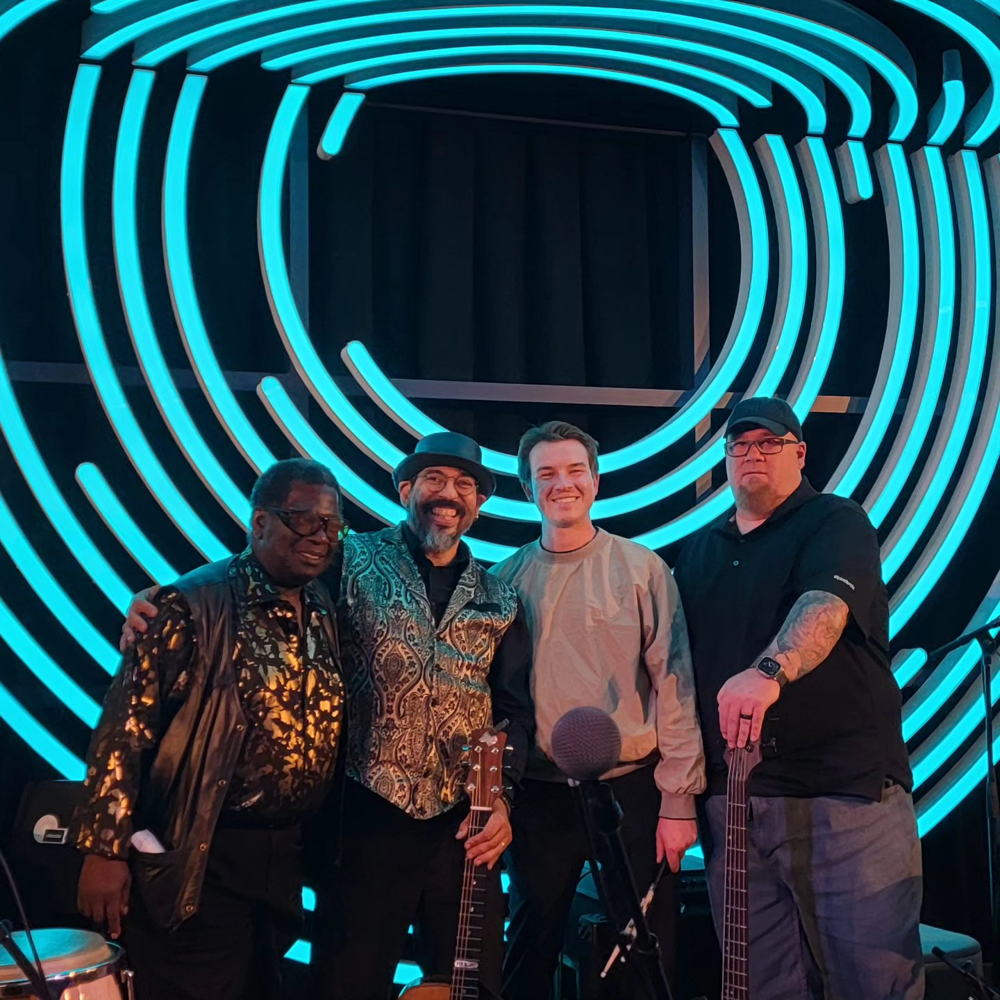

Denver private parties
Denver private parties, from a Hilltop dinner to a Botanic Gardens milestone.
Dinner parties, cocktail parties, birthdays and anniversaries, at the house or at the venue. Most of what a Denver private party needs is small by design: a solo or an acoustic duo that fits where the party already is, at a volume the table can talk across.
This is the Denver version of our private parties page: where these nights happen in this city, what a booking at home asks of the house, and how Denver treats sound after dark.
The look
A patio, and a band.
Tony Medina on a patio at conversation volume, and the same act with a band behind him when the party wants a floor.


The sizes
Solo and duo, sized for the house.
These are the two sizes a Denver house usually books, with sound support that's the right size for the space and a personal contact for the night. Larger configurations exist, and the venue section below says where they belong.
A solo carries cocktails and dinner for a party that stays at the table. A duo carries the whole evening and has the range to lift the last hour of it. Both can book for a single hour as readily as for a night.
What live music costs in this market is on the pricing page, and the cost guide sets out the Colorado figures for each kind of night, house parties included.
Where they happen
The house, the club, or the landmark.
Most Denver private parties happen at home, and the homes that host them cluster in the historic neighborhoods: Country Club, Hilltop, Park Hill, the blocks around Washington Park. A main floor that holds forty guests holds a duo with ease, and the music belongs in the corner the party naturally faces, which is why we ask about power early.
The club dinner is the second Denver habit: private dining at the University Club of Denver or the Denver Athletic Club, where the venue side is already solved and the music is the one decision left. That's duo territory, with upright bass and guitar playing standards at 65 to 72 dBA and the whole evening on one contract.
Milestones move up a size and out of the house. Mile High Station takes a quartet and a real dance floor happily; Grant-Humphreys Mansion hosts the anniversary with a century-old house around it; Denver Botanic Gardens carries the summer evening version, outdoors and early. All three are where Denver books exactly this kind of night. Where a milestone wants a floor, Tejas Singh is the act we lead with: one voice, a duo through dinner, a quartet for the dancing, one contract. A November or December date competes with the office-party calendar for the same Saturdays, and those dates are decided August through October.
The occasions a house throws across the year, from an engagement party to a holiday party at home, each have a page of their own on the private parties page, with the sizes a house books for each and the dates that matter.
At home
What the house needs to provide.
A solo takes 6 by 4 feet and one dedicated 20-amp circuit, loads in over 45 minutes and strikes in 30. A duo wants 8 by 6 feet, the same single circuit and an hour. That’s the entire ask: a corner of the main floor, an outlet not shared with the kitchen, and a door we can carry through.
Load-in at a Denver house is mostly a parking question. Tell us the block and which door is ours, alley, driveway or front walk, and we arrive with the smallest setup the night allows.
Dinner plays at 65 to 72 dBA at the nearest table, a volume you can talk across without raising your voice. Sets run 45 to 60 minutes with short breaks between them, and audio continues through every break, so the party never goes silent.
“[He] came to play in our home for a party and did an amazing job! He is a talented musician and was extremely easy and responsive to work with. He was able to play exactly the type of music we were looking for. Thanks for taking our party up a notch!”
Footprints, power and load-in times for every size are on the technical page.
After dark
Sound after dark in Denver.
Amplified sound outdoors at a residential evening event has a short life anywhere in this city, and the later the hour, the shorter it gets. We're not going to quote you an ordinance, because the rules vary by zone and they change. The planning fact is enough on its own: the loud part of a home party belongs early or indoors.
So we'll propose a night that works with that. If your street, venue or HOA has a number in writing, give it to us at contract and we build the night under it, the same way we treat the published caps at the mountain venues.
Boulder runs earlier and tighter on all of this, and gets its own page.
Questions
Asked about Denver house parties.
- Can a band fit in a Denver house?
- Yes, at the right size. A solo takes 6 by 4 feet and one dedicated 20-amp circuit; a duo wants 8 by 6 feet and the same single circuit. Load-in runs 45 to 60 minutes at those sizes, through the door you choose, and dinner plays at 65 to 72 dBA, a volume the table can talk across.
- How late can live music go at a Denver home?
- Plan the loud part early or indoors. Outdoor amplified sound at a residential evening has a short life in any Denver neighborhood, whatever the zone's exact rules say, and the later the hour the shorter it gets. Indoors at dinner volume the night can run as booked. Any written cap goes into the contract and we build under it.
- What should a milestone at Mile High Station or Denver Botanic Gardens book?
- Match the venue's scale. Mile High Station takes a quartet and a real dance floor; the Botanic Gardens wants smaller and earlier, outdoors at conversation volume; Grant-Humphreys Mansion sits between them, a duo or trio through dinner and toasts. The venue moves the size more than the guest count does.
- Do you charge travel inside Denver?
- No. Travel lines start outside the metro: one short line covers the Front Range, and the corridor and far-resort lines work the same way. Inside Denver there's no travel line at all, and sound is included at every size.
Tell us about the party, at home or at the club, and we'll recommend the act.
Live music for your event, from a solo musician to a full band, with sound support that’s the right size for the venue and a personal contact for the night.
Send us the date and the venue, and we’ll come back with a recommendation and a price for your night. What live music costs in this market is on the pricing page.